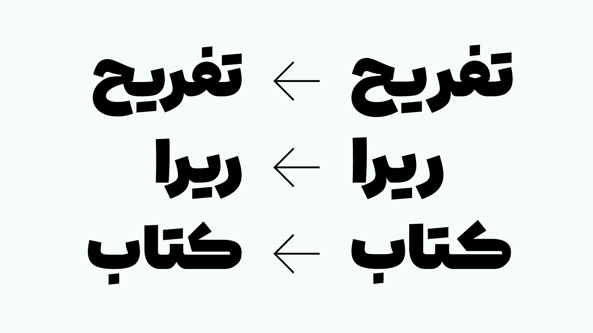
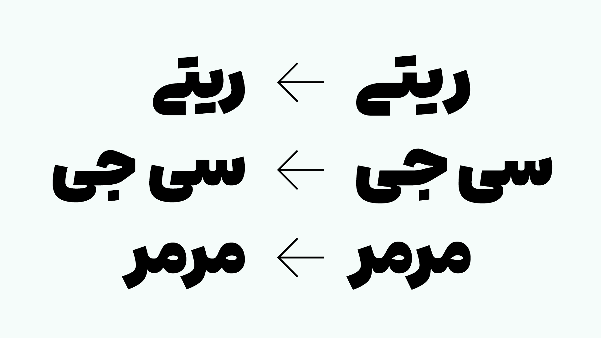
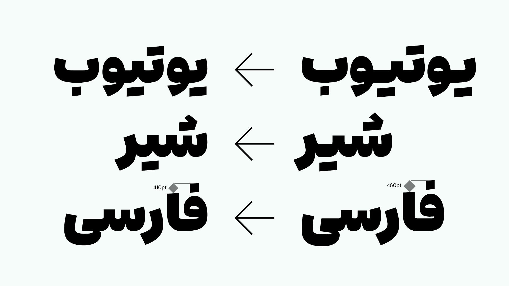
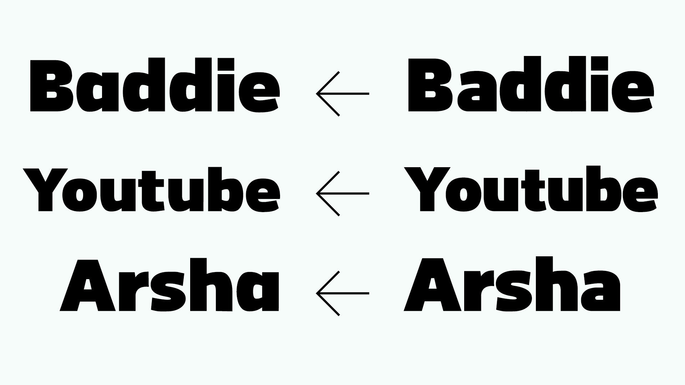

بروزرسانی کامل نسخۀ دوم آریو منتشر شد!
۱۴ خرداد ۱۴۰۴ • نوشته شده توسط محمد درویشی
۱۴ خرداد ۱۴۰۴ • نوشته شده توسط محمد درویشی
در نسخه دوم فونت آریو (استعداد مَد)، شاهد بازسازی کامل بسیاری از قسمت های فونت، و بازبینی باقی قسمت ها هستیم. اسم فونت به آریو تغییر یافت. حجم کار های انجام شده بسیار زیاد است، و بسیاری از این کار ها، مستند نشدند. به همین دلیل به اشاره به سر فصل ها کفایت میکنیم.




و تغییرات دیگری، که در اینجا اشاره نشدند.
برای دانلود این نسخه، به این پیوند مراجعه کنید.